案例研究 · Case Study
Bangkok Connect
曼谷游客多模式交通通票与数字应用
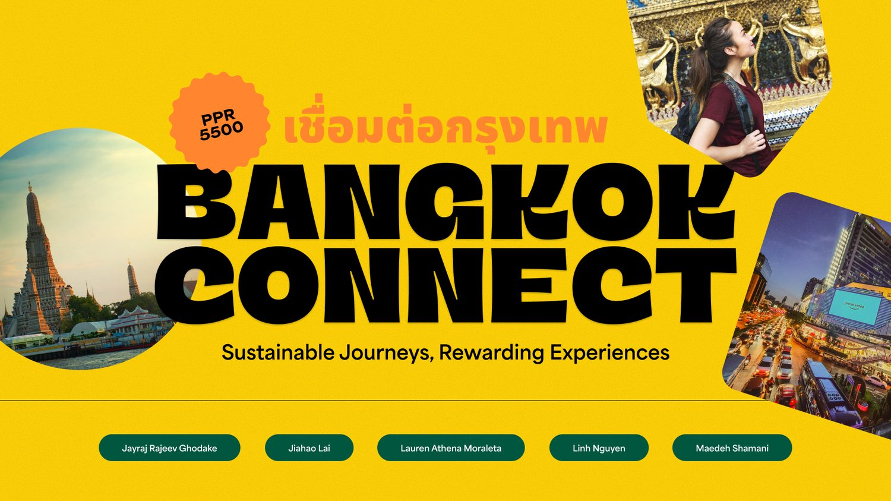
项目概述
Bangkok Connect 是莫纳什大学 PPR5500 课程中的团队设计项目。我们为泰国交通部下属的运输与交通政策规划办公室（OTP）设计了一套面向国际游客的多模式交通通票系统「OnePass」及其配套移动应用。目标是在统一曼谷分散的公共交通网络（BTS 天铁、MRT 地铁、渡轮）的同时，通过数字体验引导游客从私人打车转向公共交通，缓解曼谷严重的空气污染与拥堵问题。
- 合作方：泰国 OTP（交通部下属政府机构）
- 课程：莫纳什大学 PPR5500 设计项目
- 我的角色：UX / UI 设计 + 项目负责人，主导核心界面与交互流程
客户背景Client Background
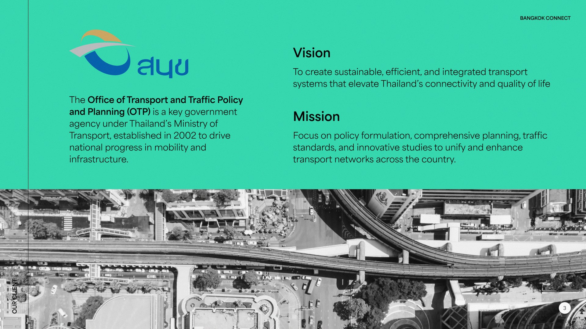
客户背景：泰国 OTP（Office of Transport and Traffic Policy and Planning，交通与交通政策规划办公室）是泰国交通部下属的政府机构，职责涵盖公共交通可达性提升与可持续出行政策制定。OnePass 正是为其「以游客撬动公共交通转型」的施政目标所做的设计响应——项目不只解决游客体验，更服务城市的交通与气候议题。Client background: Thailand's OTP (Office of Transport and Traffic Policy and Planning) is a government agency under the Ministry of Transport, responsible for public-transport accessibility and sustainable-mobility policy. OnePass directly answers OTP's mandate to transform mobility through tourists—serving both visitor experience and the city's transport & climate agenda.
设计团队
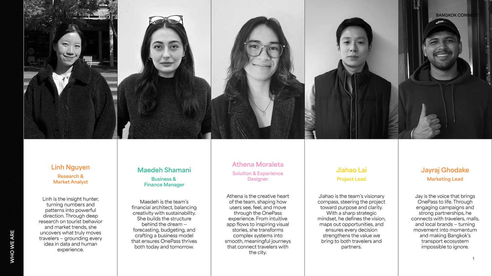
团队由五名成员组成，各展所长：Linh Nguyen（研究 / 市场分析）、Maedeh Shamani（商业 / 财务）、Athena Moraleta（方案 / 体验设计）、Jiahao Lai（我，项目负责人）、Jayraj Ghodake（营销）。从用户研究、商业论证到界面设计，我们协同推进 OnePass 从概念到落地的完整流程。
设计挑战
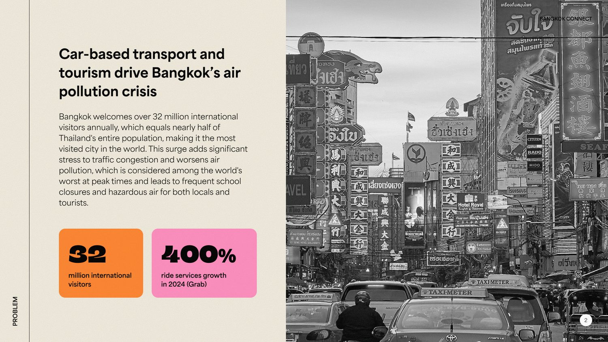
现有交通卡系统对短期游客极不友好，核心痛点有三：
- 门槛高：BTS 的 Rabbit Card 需护照注册，对短期游客不友好；
- 覆盖窄：仅支持 BTS 线路，不兼容 MRT 地铁或机场快线；
- 无通票：没有面向游客的无限次或限时通票选项。
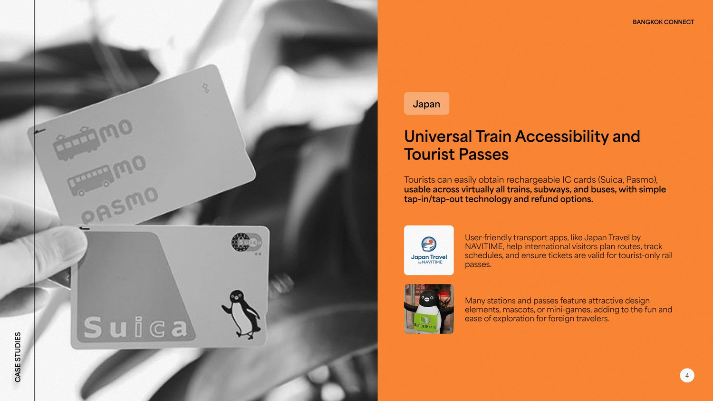
竞品参考：日本 Suica / Pasmo 已实现跨运营商全线路通用，并配有游客友好的多语言 App，证明整合式交通卡在游客中接受度很高。这确立了 OnePass 的方向——统一支付入口 + 极低门槛，而非再造封闭系统。Competitor reference: Japan's Suica/Pasmo work across all operators with a tourist-friendly multilingual app, proving an integrated transit card wins high visitor acceptance. This set OnePass's direction: one unified payment entry plus near-zero friction, not another siloed system.
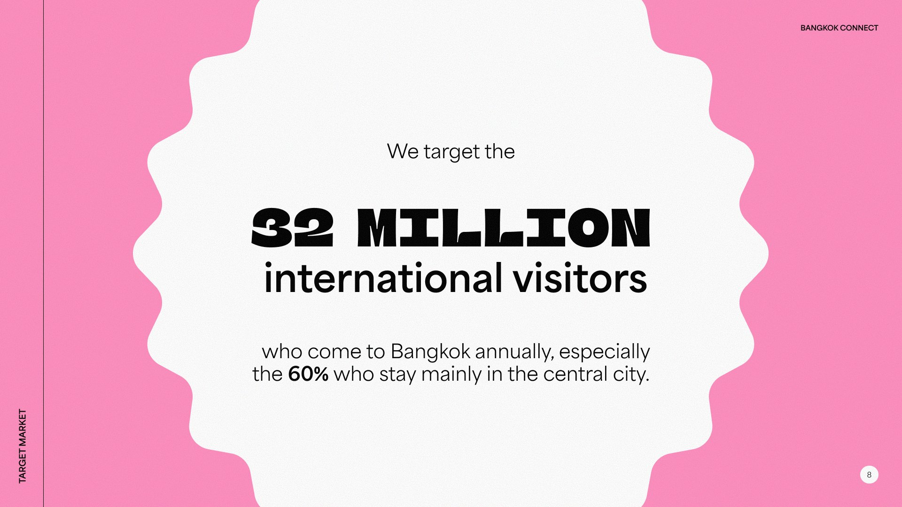
创造价值：OnePass 为城市带来三重增益——可达性（游客零门槛接入公交）、可持续性（引导游客从打车转向公交、缓解污染）、收入（通票与广告的新增交通收入流）。Value creation: OnePass delivers triple value to the city—accessibility (zero-barrier transit for tourists), sustainability (shifting tourists from ride-hailing to transit, easing pollution), and revenue (new transit income from passes & ads).
解决方案
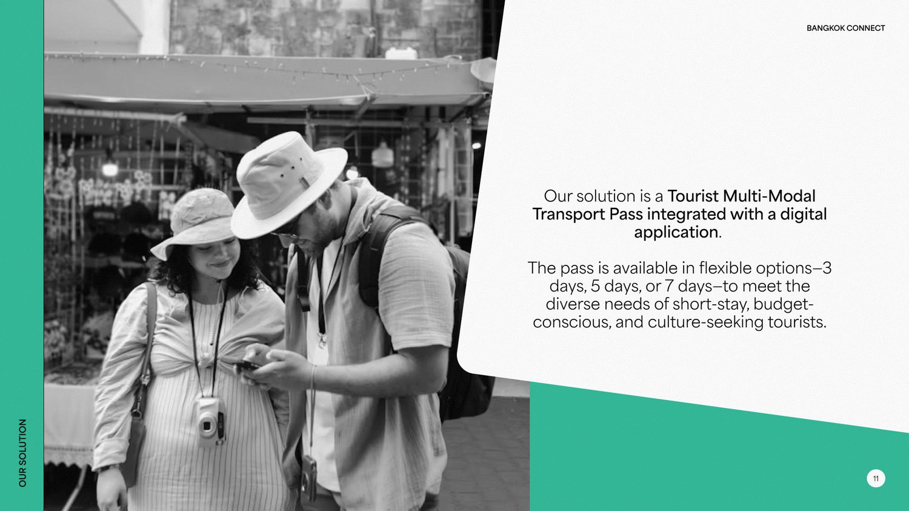
我们的方案将曼谷全部公共交通网络首次整合到一张通票中，并为 OTP 创造三重价值：
为 OTP 开创全新的游客交通票务收入来源（短期营收流）。
鼓励游客从私家车 / 网约车转向公共交通，支持 OTP 减少拥堵与控制污染的目标。
在 OTP 以基础设施为核心的模式上叠加数字层（App + 游客服务），提升可及性与用户参与度。
OnePass 应用设计
「All of Bangkok, One Pass.」我负责 OnePass 移动应用的核心界面设计与交互流程，涵盖首页仪表盘、通票购买、路线规划、专属优惠与公益捐赠五大模块。设计语言采用明亮渐变色彩呼应泰国文化活力，同时保持信息层级清晰、操作路径极简。
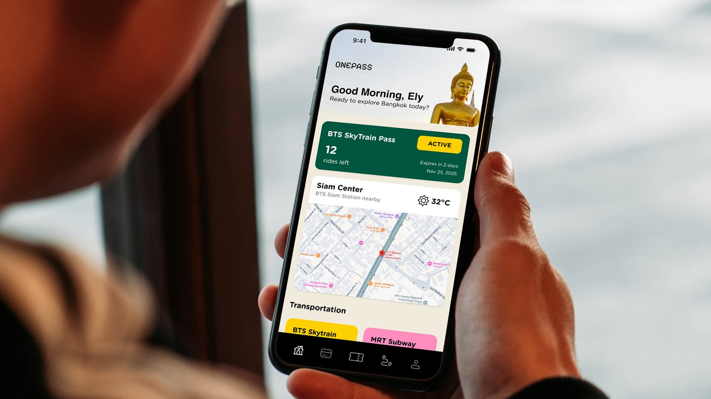
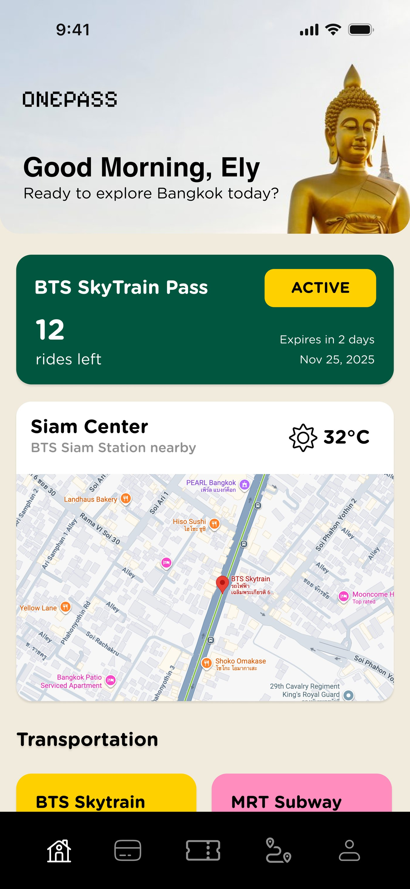
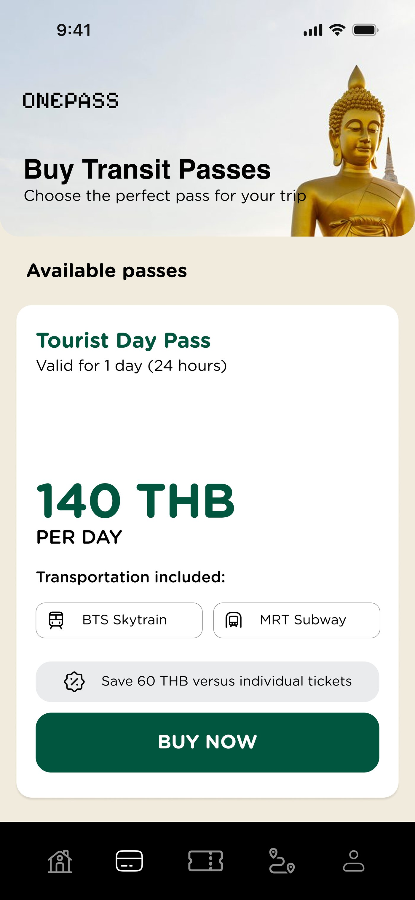
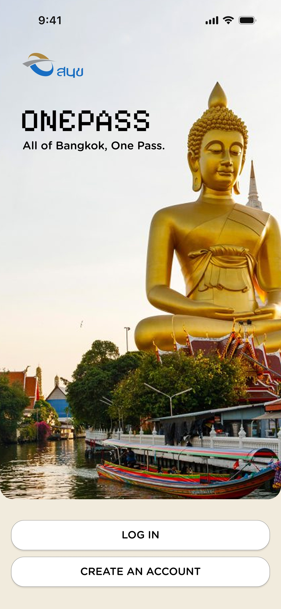
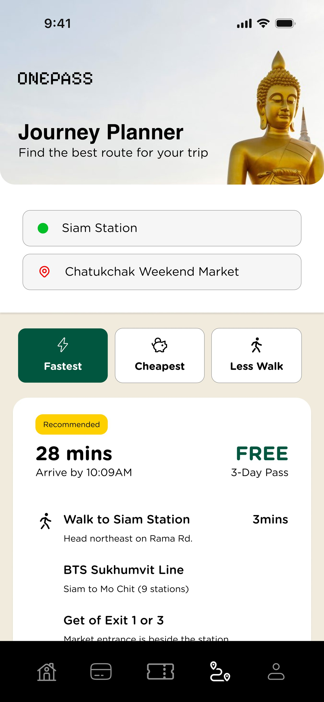
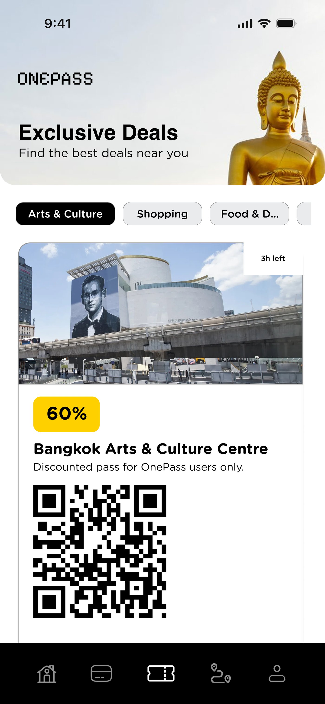
应用演示App Demo
实施路线图
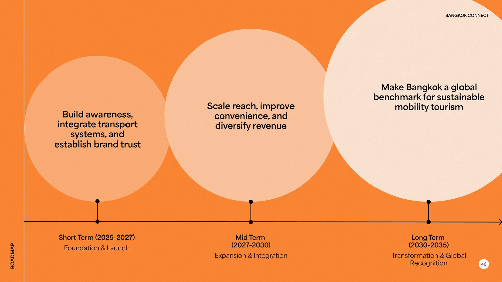
2025 – 2027 基础建设与上线Foundation & Launch
建立品牌认知、整合交通系统、构建用户信任。在试点区域完成 OnePass APP 上线与核心功能验证，打通 MRT/BTS/公交支付链路，首批合作商家入驻，形成初始用户群与口碑基础。Build awareness, integrate transport systems, and establish brand trust. Launch OnePass in pilot zones with core features validated, connect MRT/BTS/bus payment rails, onboard first merchant partners, and grow an initial user base.
2027 – 2030 扩展覆盖与收入多元化Expansion & Integration
扩大覆盖范围、提升出行便利性、实现收入多元化。从试点扩展至曼谷主要旅游区及周边城市（芭堤雅、清迈、合艾），目标 2028 年年活用户 25 万+；通过通票销售与应用内广告实现年度经常性收入 10 万+ 澳元，利润再投资于人行道与 BRT 基础设施。Scale reach, improve convenience, and diversify revenue. Expand from pilots to major tourist districts and nearby cities (Pattaya, Chiang Mai, Hatyai), targeting 250K+ annual users by 2028. Generate $100K+ yearly recurring revenue from pass sales & app advertising; reinvest into pedestrian and BRT infrastructure.
2030 – 2035 转型与全球认可Transformation & Global Recognition
将曼谷打造为亚洲可持续旅游之都。在高旅游季改善重点区域空气质量指数（AQI），减少 25–30% 的汽车依赖型游客出行；确立 OnePass 模式为全球可持续出行旅游的标杆案例，吸引国际城市复制推广。Make Bangkok a global benchmark for sustainable mobility tourism. Improve air quality index (AQI) in key zones during high tourism months; reduce car-based tourist trips by 25–30%. Position OnePass as an internationally replicable model for sustainable urban tourism.
预期成果
三年累计触达 112 万 名游客、带来 3920 万澳元 收入预测，并推动试点区空气质量与出行结构改善——OnePass 把游客增长转化为可持续的城市出行资产。A projected 1.12M visitors reached and AUD 39.2M in revenue over three years, plus measurable improvements in pilot-zone air quality and travel behaviour—OnePass turns tourist growth into a sustainable urban-mobility asset.
游客覆盖
- 三年累计触达
- 1.12M
- 增长趋势
- Y1 16万 → Y2 32万 → Y3 64万
收入预测
- 三年累计收入
- 39.2M AUD
- 增长趋势
- ~AUD 35/张，Y1 560万 → Y2 1120万 → Y3 2240万
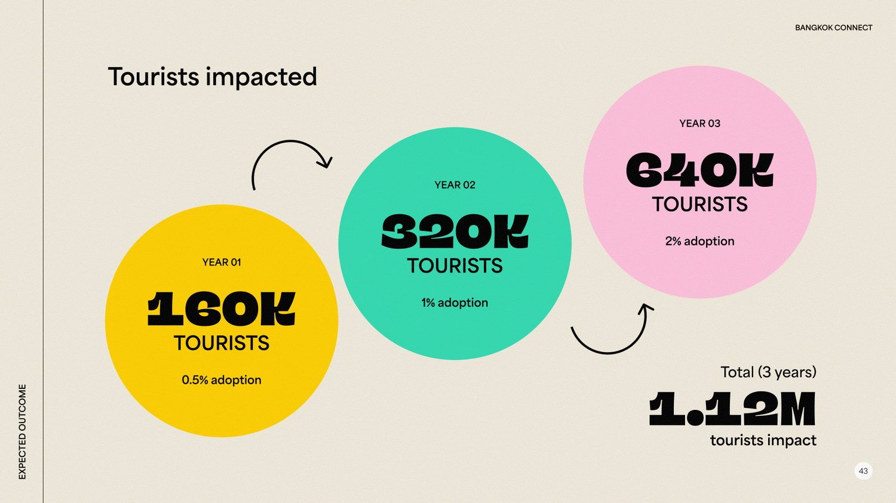
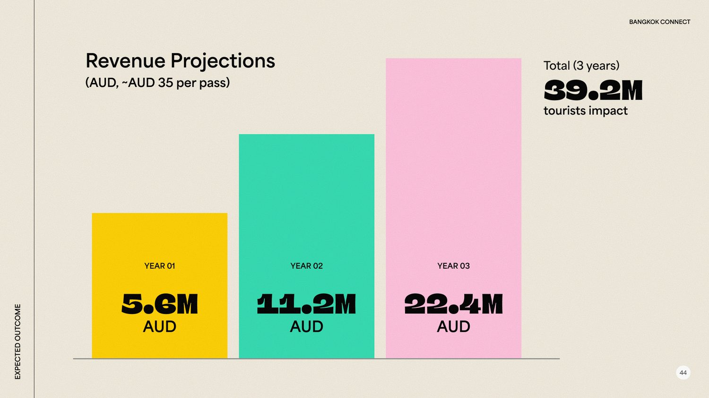
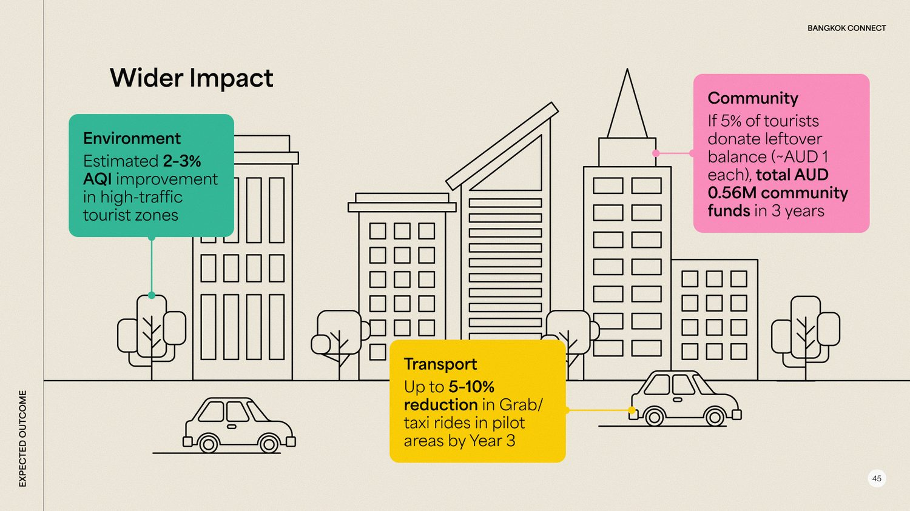
综上，OnePass 以统一的游客交通入口，在三年期预计触达 112 万游客、创造 3920 万澳元收入，并以可量化方式改善试点区空气质量与出行结构——把游客增长转化为城市可持续出行的长期资产。In sum, through one unified visitor transit entry, OnePass is projected to reach 1.12M tourists and generate AUD 39.2M over three years, while measurably improving pilot-zone air quality and travel behaviour—turning tourist growth into a lasting urban sustainable-mobility asset.
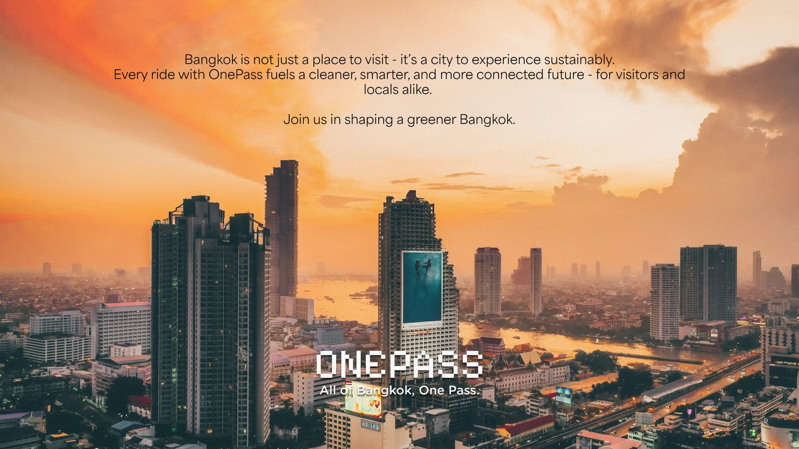
「曼谷不仅仅是一个旅游目的地——它是一座可以可持续体验的城市。每一次 OnePass 出行，都在为一个更清洁、更智能、更互联的未来注入动力。」